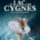

Тотальный диктант

Семейный русскоязычный лагерь ассоциации «Самокат»
Выставка А. Б Серебрякова

Пятничные встречи молодежнойассоциации Корсунь
Ателье русской кухни для взрослых

Изучение русского языка в международном колледже ЖозефаВернье
Лебединое озеро

Российские саперы завершили разминирование Алеппо
Кремль объяснил признание паспортов ЛНРи ДНР гуманитарными соображениями
Мужчина взял в заложники свою семью на юго-западе Москвы
Песков: слова прокурора Черногории о подготовке Москвой переворота безответственны


Как профессия французского полицейского перестала быть «благородной»
Четверо французских полицейских обвиняются в избиении и изнасиловании молодого человека при его задержании. Действовали ли они умышленно, случайно или в целях самозащиты — установит следствие.
Ясно одно: стражи порядка переступили грань и, увы, не впервые.
Что стало с образом добропорядочной французской полиции?
Франция насчитывает 100 тыс. жандармов и более 160 тыс. полицейских. Их служба, как в песне поется, «и опасна, и трудна». Их миссия — защищать мир и покой граждан. Оттого драма в Ольне-су-Буа вызвала у французов бурное негодование, которое не утихает вот уже несколько дней. Похоже, на репутации стражей порядка появилось жирное пятно.
«Их было пятеро. Жандармы из Тулузы. А я один. С микрофоном. И собака дала понять, что от меня пахнет взрывчаткой. Они очень боялись подходить ко мне. Хорошо, хоть на месте не взорвали», — сообщил журналист.
Полиция патрулирует кварталы в рамках операции по борьбе с наркотрафиком
Вечер 2 февраля. Северный пригород Парижа Ольне-су-Буа. Обычная проверка документов перерастает в схватку с 22-летним местным жителем по имени Тео. Согласно следствию, при задержании он получает множественные удары, в основном по голове и ногам со стороны трех полицейских. Четвертый вонзает телескопическую дубинку в анальное отверстие юноши. И это — на глазах десятков свидетелей и под камерами наблюдения.
Позже истекающий кровью Тео будет доставлен в больницу в тяжелом состоянии, врачи констатируют “10-ти сантиметровую ректальную рану “, ему проведут операцию. Трем полицейским предъявят обвинение в применении насилия в сговоре, четвертому — в изнасиловании. Никто из них вину не признает, уверяя что действовали из соображений самозащиты и называя тяжелейшую травму Тео «случайной». Ольне-су-Буа взорвется протестами с поджогами машин и столкновениями с представителями правопорядка.
Общественность на стороне Тео
История повергла в шок не только жителей маленького городка. В соцсетях посыпались тысячи гневных сообщений, сопровожденных хэштегом («правосудие для Тео»). То, что система дала серьезный сбой, признали и политики — от депутатов, до самого президента страны. Последний лично навестил Тео в местной больнице.
В своем заявлении министр внутренних дел Бруно Ле Ру пожелал, чтобы «был пролит свет на дело с крайне тяжкими обвинениями в адрес представителей правопорядка» и пообещал, что виновные будут наказаны, если «окажется, что этические нормы не были ими соблюдены».
На свадьбу друзья решили поздравить креативно. pic.twitter.com/ILBWJxS3Vm — Dmitry Monakhov (@dmtrmon) 22 апреля 2017 г.
Мэр города Ольне-су-Буа Бруно Бесшиза (кстати, бывший полицейский) выразил поддержку пострадавшему и его семье, назвав случившееся «страшным и нестерпимым». Он призвал «провести расследование как можно быстрее и в условиях полной прозрачности».
Глава департамента Сен-Сен-Дэни Стефан Труссель дал следующий комментарий: «Есть тысячи полицейских, которые добросовестно выполняют свою работу. Однако слишком много задержаний оборачивается кошмаром для молодежи», и добавил, — «Образу Республики был нанесен вред. Нужно срочно возвращать подорванное доверие».
За семью замками
История с Тео уникальна тем, что она оказалась в выпусках новостей, на первых полосах газет. Стала бы она достоянием общественности, если бы не многочисленные свидетели и не видео-доказательства? Маловероятно. Подобные случаи стараются умалчивать.
К примеру, данные о пострадавших или погибших при исполнении полицейских публикуются регулярно, а где найти статистику неправомерных действий по отношению к гражданам?
По мнению экспертов, эти данные существуют, их сбор инициирует само правительство, но МВД их тщательно скрывает. Так берегут имидж блюстителей порядка, — считают правозащитники. Эта стратегия и правда неплохо работала. Согласно опросу института Ifop, проведенному год назад, 8 из 10 французов были хорошего мнения о полицейских.
Правозащитники бьют тревогу
За неимением официальных данных, французские НКО вынуждены вести свой учет. Как, например, ассоциация «Действия христиан за отмену пыток» (l’Action des chrétiens pour l’abolition de la torture, Acat).
Ею были изучены 89 случаев применения насилия полицейскими с 2010 по 2015 гг. Из них 26 случаев — со смертельным исходом, 29 — с полной потерей дееспособности и 22 — с причинением менее тяжких увечий. Все они имели место при задержании, транспортировке, нахождении под стражей или во время манифестаций. По мнению ассоциации, это лишь вершина айсберга.
Еще один вывод исследования: работники полиции зачастую наносят удары задержанным уже после фиксирования наручников. Последние, кстати, используются «намного чаще, чем позволяет закон»: наручники надеваются «без малейшей угрозы со стороны задержанного и без риска его побега».
Опрошенные жалуются на невежливое обращение полицейских «на ты», «унижения», а также «гомофобные, сексистские высказывания, оскорбления относительно их религиозной или расовой принадлежности», — говорится в отчете.
Лишь в 7 случаях (из 89) дело дошло до обвинительного приговора, и только в 1 — до реального тюремного срока для виновного полицейского.
К этим печальным цифрам наверняка прибавится и вердикт по делу о юноше из Ольне-су-Буа. Правозащитники и французская общественность надеются, что решение судей в преддверии Международного дня борьбы с жестоким обращением полицейских (15 марта) будет справедливым.
По теме
Общество
Как профессия французского полицейского перестала быть «благородной»
15 февраля 2017По Франции
Эйфелеву башню посадят в бункер
15 февраля 2017Общество
Долой зависимость от телефона
15 февраля 2017По Франции
Эйфелеву башню посадят в бункер
15 февраля 2017Общество
Долой зависимость от телефона
15 февраля 2017
Поздравляю! А что с архивами Земгора? Поздравляю! А что с архивами Земгора? Поздравляю! А что с архивами Земгора? Поздравляю! А что с архивами Земгора? Поздравляю! А что с архивами Земгора? Поздравляю! А что с архивами Земгора?
Signaler un abus
Поздравляю! А что с архивами Земгора? Поздравляю! А что с архивами Земгора? Поздравляю! А что с архивами Земгора? Поздравляю! А что с архивами Земгора? Поздравляю! А что с архивами Земгора? Поздравляю! А что с архивами Земгора?
Signaler un abus